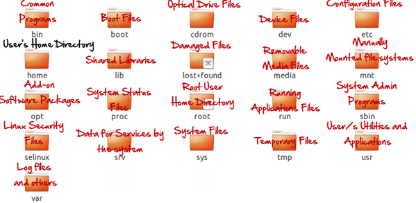

Now, that you have installed Linux, it's time to make the big switch from your Windows or Max OS operating system.
Mac OS uses a UNIX core. Your switch from Mac OS to Linux will be relatively smooth.
It's the Windows users who will need some adjusting. In this tutorial will be introduce the Linux OS and compare it with Windows.
Linux File System
In Microsoft Windows, files are stored in folders under different data drives like C: D: E: .
But, in Linux, files are ordered in a tree structure starting with the root directory.
This root directory can be considered as the start of the file system and it further branches out various other subdirectories. The root is denoted with a forward slash '/'.
A general tree file system on your UNIX may look like this.
In Linux and UNIX, everything is a file. Directories are files, files are files, and devices like Printer, mouse, keyboard etc.are files.
Let's look into the File types in more detail '
General Files also called as Ordinary files. They can contain image, video, program or simply text. They can be in ASCII or a Binary format. These are the most commonly used files by Linux Users
These files are a warehouse for other file types. You can have a directory file within a directory (sub-directory).You can take them as 'Folders' found in Windows operating system.
In MS Windows, devices like Printers, CD-ROM and hard drives are represented as drive letters like G: H:. In Linux, there are represented as files. For example, if the first SATA hard drive had three primary partitions, they would be named and numbered as /dev/sda1, /dev/sda2 and /dev/sda3.
Note: All device files reside in the directory /dev/
All the above file types (including devices) have permissions, which allow a user to read, edit or execute (run) them. This is a powerful Linux/Unix feature. Access restrictions can be applied for different kinds of users, by changing permissions.
There are 3 types of users in Linux
A regular user account is created for you when you install Ubuntu on your system. All your files and folders are stored in /home/ which is your home directory. As a regular user, you do not have access to directories of other users.
Other than your regular account another user account called root is created at the time of installation. The root account is a super user who can access restricted files, install software and has administrative privileges. Whenever you want to install software, make changes to system files or perform any administrative task on Linux; you need to log in as a root user. Otherwise, for general tasks like playing music and browsing the internet you can use your regular account.
Linux is widely used as a Server Operating System. Services such as Apache, Squid, mail, etc. have their own individual service accounts. Having service accounts increases security of your computer. Linux can allow or deny access to various resources depending on the service.
Note:
In Windows, you cannot have 2 files with the same name in the same folder. See below -

While in Linux, you can have 2 files with the same name in the same directory, provided they use different cases.

For every user in Linux, a directory is created as /home/
Consider, a regular user account "Tom". He can store his personal files and directories in the directory "/home/tom". He can't save files outside his user directory and does not have access to directories of other users. For instance, he cannot access directory "/home/jerry" of another user account"Jerry".
The concept is the similar to C:\Documents and Settings in Windows.
When you boot the Linux operating system, your user directory (from the above example /home/tom) is the default working directory. Hence the directory "/home/tom is also called the Home directory which is a misnomer.
The working directory can be changed using some commands which we will learn later.
In Windows, System and Program files are usually saved in C: drive. But, in Linux you would find the system and program files in different directories. For example, the boot files are stored in the /boot directory and program and software files can be found under /bin , device files in /dev. Below are important Linux Directories and short description of what they contain.

These are most striking differences between Linux and other Operating Systems. There are more variations you will observe when switching to Linux and we will discuss them as we move along in our tutorials.